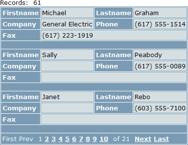
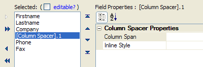
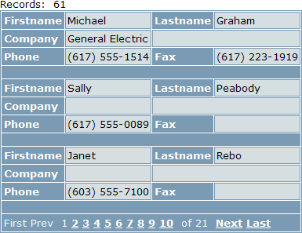

Using Column Spacers for Control Positioning
When designing a dialog component or a grid component with columnar formatting (where the Layout Options > Number of "Layout" Columns property is greater than 1), you may position controls by inserting column spacers after controls.
The following example shows the effects of adding column spacers. In this case the grid has the following properties:
Layout Options > Number of "Layout" columns is set to 2
Layout Options > Rows of data is set to 3
The grid has 5 fields. This is the default layout of the grid without a column spacer.

We add a column spacer after the Company field.

The result is pictured below. The spacer pushes the Phone field down one row.

See Also
Using the Number of "Layout" Columns Feature
Limitations
Web publishing applications only.